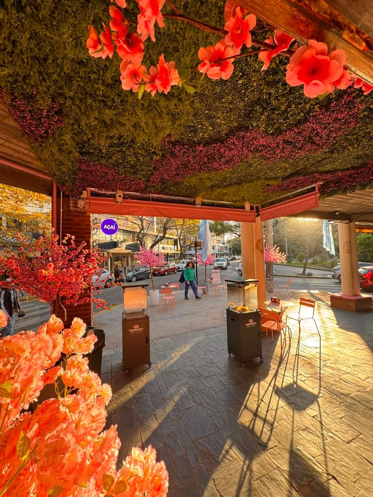
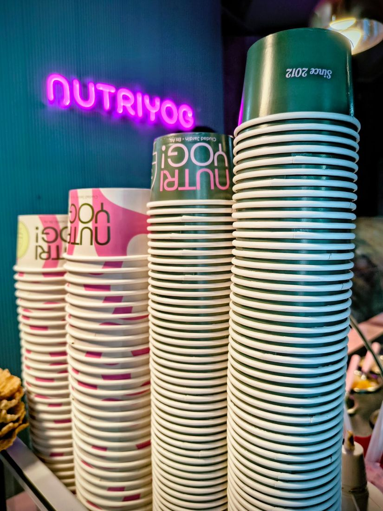
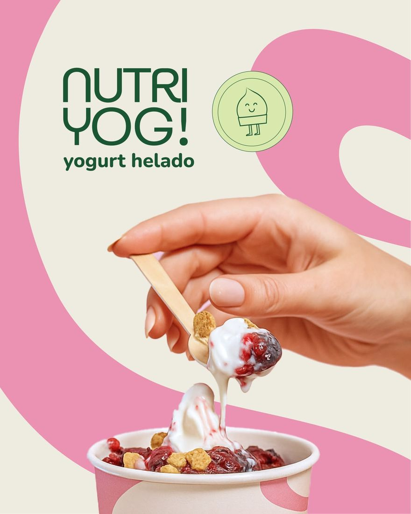
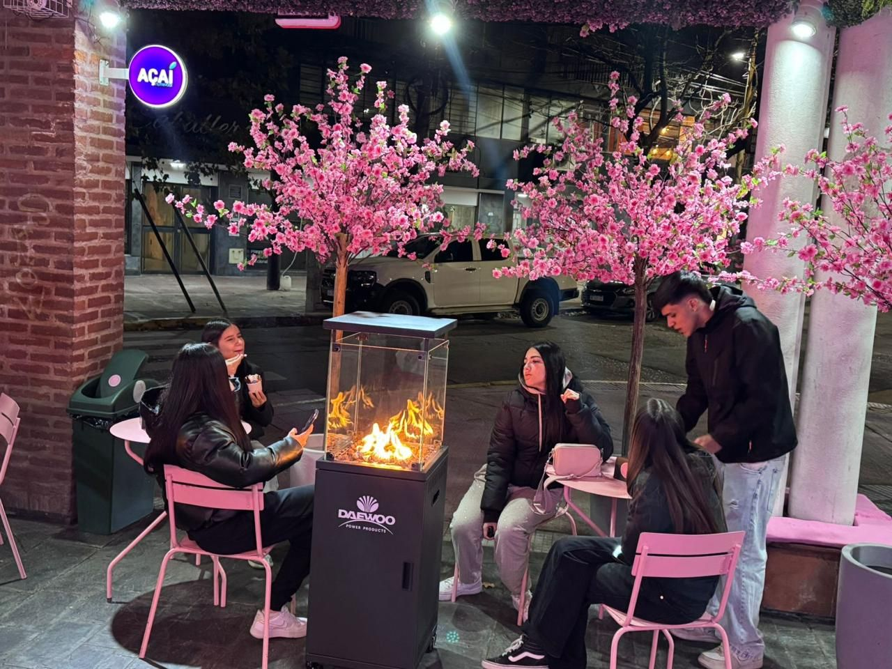

Clásico Nutri
Nuestro yogurt helado de siempre, con frutillas y crocante.
- Yogurt helado natural
- Salsa de dulce de leche
- Frutillas frescas
- Granola crocante
Yogurt helado · Ciudad Jardín
Nuestro yogurt helado de siempre, con frutillas y crocante.
Açaí bien frío, con fruta y miel. Energía pura.
Yogurt helado con salsa de frutos del bosque.



Quiénes somos
Nutri Yog! nació en 2012 con una idea simple: hacer el yogurt helado que nosotros mismos queríamos comer. Cremoso, fresco y con toppings de verdad. Empezamos con una máquina, un mostrador y muchas ganas, y el barrio nos fue adoptando vaso a vaso.
Hoy seguimos en la misma esquina, ahora con terraza, cerezos en flor y la misma obsesión por la calidad. Sumamos açaí, churros, canolis y un montón de combinaciones nuevas, pero lo esencial no cambió: que cada visita se sienta como un pequeño gusto bien merecido.
La experiencia
En Nutri Yog! te servimos un yogurt de la máxima calidad, pero también un lugar para quedarte: sentarte bajo los cerezos, juntarte con amigos alrededor del fuego y sacar la foto del día.
Mesas rosas, flores todo el año y sol de tarde en plena Ciudad Jardín.
Estufas en la terraza para que el yogurt también sea plan de invierno.
Vasos para uno, bowls para dos y combinaciones para toda la mesa.
